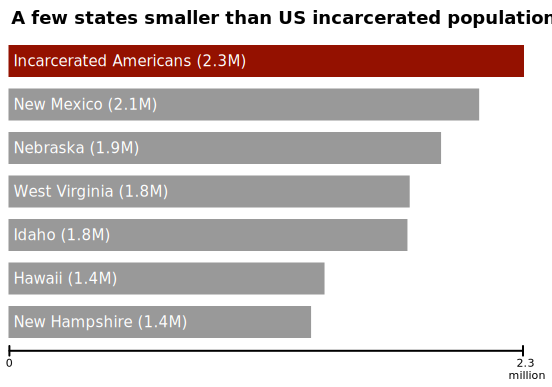
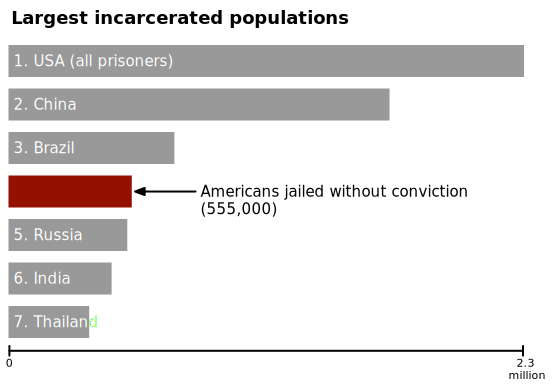
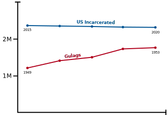

Can we talk about incarceration?
Americans jailed or imprisoned
(about 2.3 million)
It is almost impossible to comprehend the amount of incarcerated Americans.
The United States holds more people in jails and prisons than any other country by far, both in absolute numbers and as a percentage of population.
People incarcerated
People incarcerated
Incarcerated Americans outnumber almost every profession. There are more incarcerated people than lawyers. More incarcerated people than military personnel.
There are more incarcerated people than bus drivers, bar tenders, and hair dressers combined.
More Americans are incarcerated today than have died in all of the wars in all of history combined.
Shown here in red is the number of Americans killed by police each year (about 1,000).
While the public murder of innocent people by police has rightly sparked massive outcry, hidden away behind prison walls, there is an ocean of ruined lives.
Imagine George Floyd had been arrested instead of murdered, and given the maximum sentence of 20 years. He would be in prison until age 66. The life expectancy for black men in America is 72. A life destroyed, even while the system "works"
← There he is. Somebody's father. Somebody's son. Alone and afraid, lost in an endless sea of anonymous suffering. His life, tossed away like garbage over a $20 bill.
Is this what justice looks like?
The number of incarcerated Americans is greater than the population of 15 states and all territories.

One quarter of incarcerated Americans have not been convicted of any crime. Instead, they are in pre-trial detention, usually due to the high cost of cash bail.
Unconvicted Americans are the 4th largest incarcerated population in the world.

Knowing all of this forces us to ask an uncomfortable question: what if we're not as free as we think we are?
There are more incarcerated Americans today than there were Gulag prisoners under Stalin.
